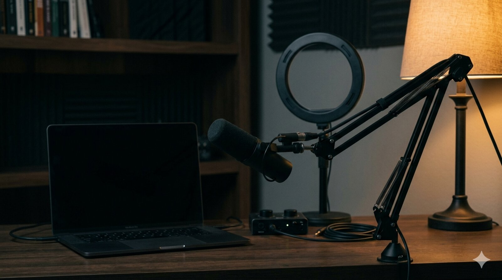
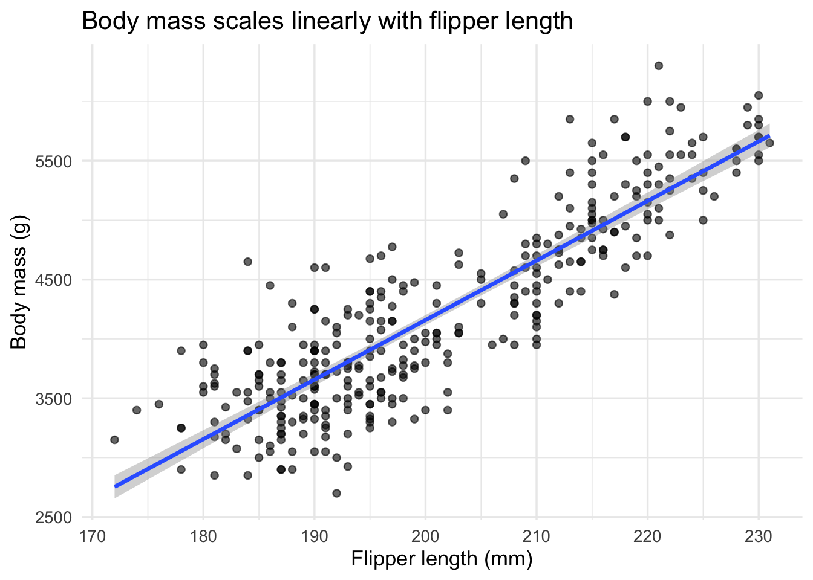

A reproducible workflow for producing short, focused screencasts of R data analysis using OBS Studio and YouTube. Includes installation, scene configuration, recording, editing, and a worked five-minute example based on the Palmer Penguins dataset.
Author
Ronald G. Thomas
Published
May 2, 2026

A live OBS Studio session ready to capture an R analysis.
A short screencast captures the small decisions a written report leaves out.
1 Introduction
I did not appreciate how much a good screencast teaches until a colleague sent me a five-minute video of an analysis I had read about in a paper a week earlier. The paper had described the model, the data, and the result. The screencast showed the analyst pause over a missing value, change a plot scale mid-thought, and read aloud the output of summary(fit). That brief exposure to the analyst’s working memory taught me more about the analysis than the paper had.
What I discovered, after a few false starts with proprietary tools, was that the open source community already had a complete capture pipeline waiting: OBS Studio for recording, YouTube for distribution, and a small set of recording conventions to glue them together. The pipeline costs nothing, runs on macOS, Linux, and Windows, and produces files that any future viewer can play without an account.
We walk through that pipeline end to end. The post covers OBS installation, scene and audio configuration suitable for an R coding session, a publication checklist for YouTube, and a worked five-minute example using the Palmer Penguins dataset that mirrors the analytical structure of Palmer Penguins Part 1.
1.1 Motivations
Written reports describe the finished analysis but not the small decisions the analyst makes between keystrokes. A short screencast exposes those decisions.
Proprietary screencasting tools (Camtasia, ScreenFlow) cost between 100 and 300 dollars and lock recordings into vendor-specific project formats.
Live streaming an analysis to a small group of collaborators (a thesis advisor, a paper co-author, a study team) was awkward without a reproducible setup.
The R community has gravitated toward YouTube as the default home for asynchronous tutorials, but documentation of the recording workflow itself is scattered.
1.2 Objectives
Install and configure OBS Studio on macOS or Linux with sensible defaults for R coding screencasts (1080p, 30 fps, hardware encoder).
Establish a three-scene template (code only, code with webcam, title card) and a two-source audio chain (microphone with noise suppression, optional system audio).
Produce a 30-second test recording, edit it with ffmpeg, and upload it to YouTube as an unlisted draft with appropriate metadata.
Walk through a complete five-minute live R coding session based on the Palmer Penguins dataset, ready to record on a second take.
Workspace prepared for the first recording session.
2 What Is OBS Studio?
OBS Studio (Open Broadcaster Software) is a free, cross-platform video recording and live streaming application released under the GNU General Public License version 2. It plays the same role for video that ffmpeg plays for command-line transcoding: a deeply scriptable, deeply configurable workhorse that the rest of the open source ecosystem builds on. A concrete example: every academic conference I have attended in the past two years that recorded talks for asynchronous viewing used OBS, either directly by the AV team or via a downstream tool that wraps it.
3 Prerequisites
Operating system. macOS 12 or later, Ubuntu 22.04 or later, or equivalent. Windows 10/11 also works but is not the focus of this post.
Hardware. A laptop or desktop from the past five years. Hardware H.264 encoding (Apple VT on macOS, NVENC on NVIDIA GPUs) reduces CPU load substantially during recording.
Microphone. Any USB or 3.5mm microphone. Built-in laptop microphones produce listenable but distinctly amateur audio.
Prior knowledge. Basic shell command experience and familiarity with the R session one intends to record.
Disk space. Roughly 50 megabytes per minute of recorded video at the recommended quality settings.
4 Step by Step
4.1 Step 1: Install OBS Studio
On macOS:
brew install --cask obs
On Debian or Ubuntu:
sudo apt install obs-studio
Launch OBS once and accept the auto-configuration wizard’s defaults. The wizard probes the system to choose sensible recording resolution and encoder settings.
Verification:
obs--version
A successful install prints the version string (30.x as of 2026-05).
4.2 Step 2: Configure Scenes and Sources
A coding screencast typically needs three scenes:
Code only. A single Display Capture or Window Capture source for the editor or terminal. Useful for the bulk of the recording.
Code with webcam. The same capture source plus a small Video Capture Device overlay for the presenter, anchored to a corner.
Title card. A static image source for the opening and closing seconds of the video.
Window Capture is preferred over Display Capture when only a single application needs to be visible: it ignores notification banners, desktop clutter, and accidental tab switches.
4.3 Step 3: Audio Routing
Two audio sources matter for a coding screencast: microphone and (optionally) system sound. Add both as separate sources so they can be mixed independently.
For a USB microphone, set the input gain so the audio meter peaks around -12 dB during normal speech. Apply the Noise Suppression filter (RNNoise) and a Compressor filter to even out volume across sentences.
4.4 Step 4: Recording Format
In Settings > Output > Recording:
Recording Path. A dedicated ~/screencasts/ directory.
Recording Format.mkv (resilient to crashes; remux to mp4 afterward).
Encoder. Hardware encoder if available (Apple VT H.264 on macOS, NVENC on Linux with NVIDIA GPU).
Rate Control. CQP at quality 18 to 22.
Set frame rate to 30 fps and base resolution to 1920x1080. Higher frame rates are unnecessary for coding content and inflate file size.
4.5 Step 5: Practice Run
Record a 30-second test that exercises every scene transition and confirms the audio levels. Play the result back at full screen on a different device. Common issues caught at this stage include muted microphone input, font sizes too small to read at video compression, and a busy desktop background visible behind a window-captured editor.
Mid-recording: the editor on the left, a small webcam tile in the corner.
4.6 Step 6: The Five-Minute Analysis
The recorded analysis itself follows a strict template: load, glimpse, plot, model, summary. The full code for the worked example is below; during the screencast each block is typed and explained in real time.
A brief comment on the dataset acknowledges its provenance (Palmer Station, Antarctica; collected by Dr. Kristen Gorman) and previews the question: how well does flipper length predict body mass?
ggplot( penguins_clean,aes(x = flipper_length_mm, y = body_mass_g)) +geom_point(alpha =0.6) +geom_smooth(method ='lm', se =TRUE) +labs(x ='Flipper length (mm)',y ='Body mass (g)',title ='Body mass scales linearly with flipper length' ) +theme_minimal(base_size =13)

The visual establishes the linear relationship before the model is fit, which keeps the viewer oriented.
fit <-lm(body_mass_g ~ flipper_length_mm,data = penguins_clean)summary(fit)
Call:
lm(formula = body_mass_g ~ flipper_length_mm, data = penguins_clean)
Residuals:
Min 1Q Median 3Q Max
-1057.33 -259.79 -12.24 242.97 1293.89
Coefficients:
Estimate Std. Error t value Pr(>|t|)
(Intercept) -5872.09 310.29 -18.93 <2e-16 ***
flipper_length_mm 50.15 1.54 32.56 <2e-16 ***
---
Signif. codes: 0 '***' 0.001 '**' 0.01 '*' 0.05 '.' 0.1 ' ' 1
Residual standard error: 393.3 on 331 degrees of freedom
Multiple R-squared: 0.7621, Adjusted R-squared: 0.7614
F-statistic: 1060 on 1 and 331 DF, p-value: < 2.2e-16
A flipper length increase of one millimetre is associated with roughly a 50 gram increase in body mass. R-squared is approximately 0.76, which is striking for a single predictor and provides a natural cliffhanger for a follow-up post that introduces species as a covariate (see Palmer Penguins Part 1).
The screencast closes with a one-sentence summary and a verbal pointer to the written post that contains the full analysis.
Upload via the YouTube Studio web interface. Recommended metadata fields:
Title. Mirror the blog post title.
Description. Link to the blog post and to the GitHub repository.
Tags.r, data analysis, screencast, plus dataset tags.
Chapters. Add timestamp markers in the description so viewers can jump to the modelling section.
4.8 Step 8: Embed in the Blog Post
Quarto embeds YouTube videos with a single shortcode:
The video should appear early in the post, ideally just after the introduction, so visitors can choose to watch or read.
4.9 Default Recording Hotkeys
Action
macOS shortcut
Linux shortcut
Start / stop record
not bound by default
not bound by default
Pause record
not bound by default
not bound by default
Switch scene
configurable per scene
configurable per scene
Mute microphone
configurable
configurable
Bind these in Settings > Hotkeys before the first real recording. Unbound defaults catch most beginners off guard.
5 Things to Watch Out For
The following gotchas have all caught me at least once. Each lists the symptom and the fix.
Display Capture shows a black rectangle on macOS. Symptom: the captured area is uniformly black even though the screen has content. Fix: grant OBS Screen Recording permission in System Settings > Privacy & Security > Screen Recording, then quit and relaunch OBS. The permission request only appears the first time; if it was dismissed, it must be granted manually.
Audio is silent in the recording but the meter shows activity. Symptom: the OBS audio meter moves during speech, but playback is silent. Fix: check that the microphone source is not muted in the Audio Mixer panel (the speaker icon is hidden until hovered) and confirm the recording’s output channel mix in Settings > Audio > Advanced.
The recording stutters when the editor is in focus. Symptom: intermittent dropped frames during typing. Fix: switch from software (x264) to a hardware encoder, or reduce base resolution to 1280x720 if hardware encoding is unavailable. Coding content at 720p is still readable at typical viewing distances.
YouTube rejects the upload citing ‘invalid format’. Symptom: YouTube Studio displays a generic error after the upload finishes. Fix: most often the recording is in MKV. Remux to MP4 with ffmpeg -i recording.mkv -c copy recording.mp4. MKV is preferred during recording for crash resilience but YouTube prefers MP4.
Font in the recording is unreadable when played at small window sizes. Symptom: code is legible at full screen but pixelated in a 480-wide embed. Fix: increase the editor’s font size to 18 or 20 points before recording. What looks oversized in the editor compresses to comfortable reading size in the final video.
Webcam overlay is mirrored. Symptom: text on a notebook visible to the webcam appears reversed in the recording. Fix: right-click the Video Capture Device source, choose Transform > Flip Horizontal. OBS mirrors the preview by default to feel natural to the speaker but does not mirror the recorded output.
Recording fills the disk during a long session. Symptom: OBS silently stops recording after 20 to 30 minutes. Fix: at the recommended quality, every 10 minutes consumes roughly 500 megabytes. Confirm at least 5 gigabytes of free space before a long session, or switch to a more aggressive crf value (lower visual quality, smaller file).
6 Uninstall / Rollback
To remove OBS Studio and its configuration entirely:
Both removals are reversible: a fresh install re-creates the configuration directory with default settings on first launch.
A finished recording, ready to clip and upload.
7 What Did We Learn?
7.1 Conceptual
A short screencast is a different teaching artefact from a written post; both have a place, and pairing them produces a richer resource than either alone.
The capture pipeline (recorder, encoder, hosting) can be assembled entirely from open source and free-tier components, with no long-term lock-in.
Recording forces a kind of editorial discipline that improves the written post too: vague paragraphs become obvious when read aloud.
7.2 Technical
Hardware encoders are essential on laptops; software encoding (x264) competes with R for CPU cycles and produces visible stuttering.
MKV during recording, MP4 for upload. The two-stage convention protects against crashes without sacrificing platform compatibility.
Audio quality matters more than video quality. Viewers tolerate 720p video far better than echo-prone or compressed audio.
7.3 Gotchas
macOS screen-recording permission is granted per-application and silently fails closed. New OBS installs need a deliberate first-run trip through System Settings.
YouTube’s MP4 preference is documented but not enforced clearly in upload error messages.
Default OBS hotkeys are intentionally unset to avoid clashes; this feels broken until one realises it.
8 Limitations
The pipeline does not include a post-production editor. For multi-cut tutorials or any work requiring callouts, a separate editor (Kdenlive, DaVinci Resolve, iMovie) is needed.
The Palmer Penguins worked example is a demonstration, not a template for clinical trial visualisation. Audio narration would need different framing for sensitive data.
Live streaming via YouTube introduces 5 to 30 seconds of latency, which makes interactive Q&A clunky compared with a dedicated video conferencing tool.
The post does not address closed captioning or multilingual subtitles, both of which deserve their own treatment.
9 Opportunities for Improvement
Capture the OBS scene collection as a JSON file under analysis/configs/scene-collection.json so the configuration is reproducible across machines.
Script the audio chain (RNNoise + Compressor) using obs-websocket so the configuration can be applied programmatically.
Compare hardware encoder quality across Apple VT, NVENC, and QuickSync at matched bitrates.
Produce a follow-up post on Kdenlive for non-trivial editing.
Document a captioning workflow with whisper.cpp for automatically generated subtitles.
Build a CI job that validates the scene collection JSON against the OBS schema on each commit.
10 Wrapping Up
OBS Studio, paired with YouTube and a small set of recording conventions, gives R users a complete open source pipeline for live coding content. The investment in initial setup is modest and pays off across many subsequent recordings: the same scenes, audio chain, and upload conventions apply to every post.
The next step in this series will be a recording of the Palmer Penguins analysis above, published both as a written post and as an embedded five-minute video, so the comparison between the two media can be made directly.
In conclusion, three points merit emphasis. First, the open source pipeline (OBS + ffmpeg + YouTube) is sufficient for publication-quality screencasts of R analyses, with no proprietary tooling required. Second, three scenes, two audio sources, and a 30-second test constitute the minimum viable configuration; everything beyond that is refinement. Third, audio quality and font size are the two settings most often underestimated by first-time recorders, and correcting them before recording saves significant post-production effort.